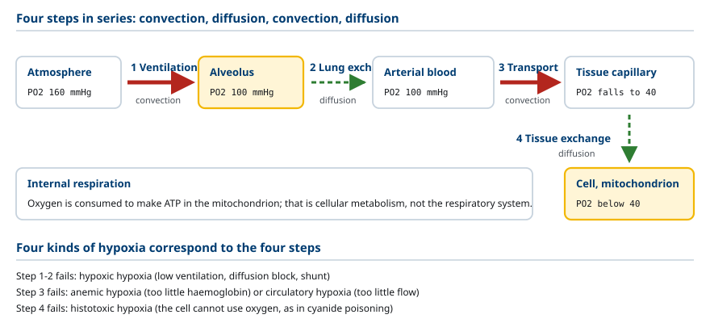
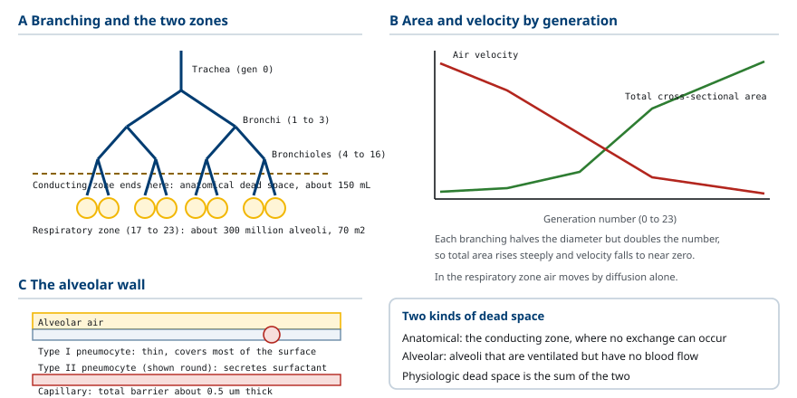
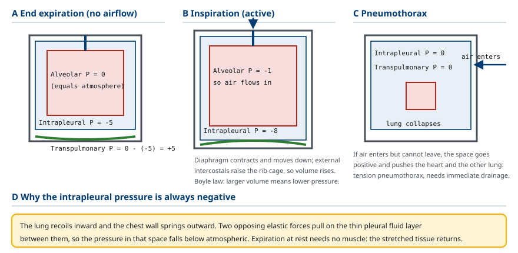
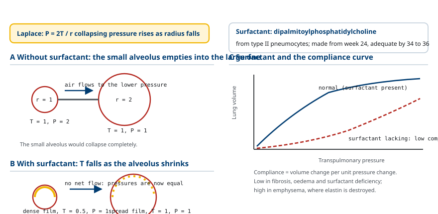
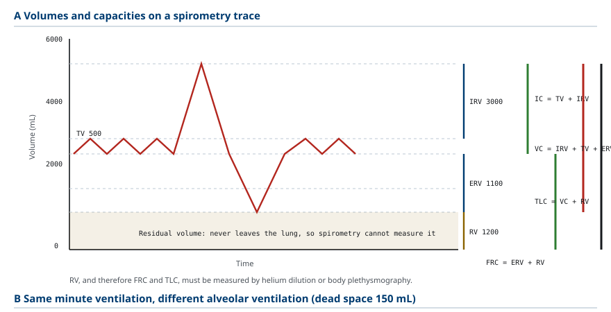
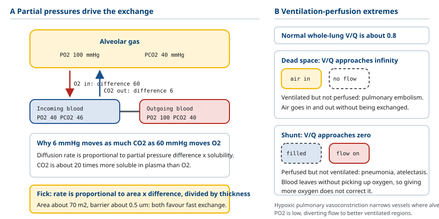
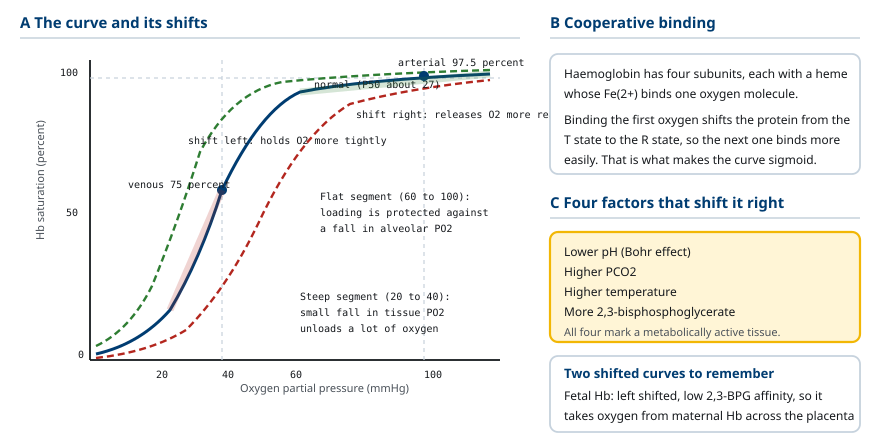
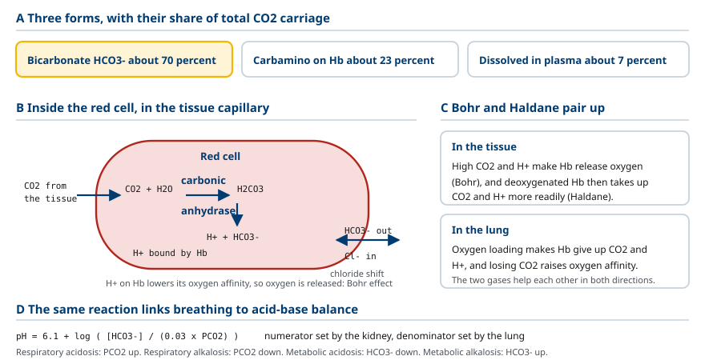
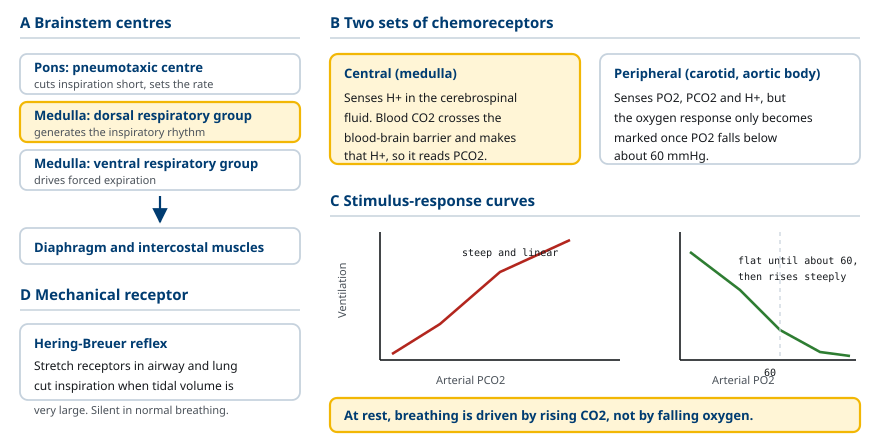

M01-W01-L02 · 인체일반생물학과 기초세포생물학
호흡계 요약: 환기·가스교환·산소 운반
The Respiratory System: Ventilation, Gas Exchange and Oxygen Transport
학습목표
- 호흡을 외호흡과 내호흡으로 나누어 정의하고 네 단계의 연속 과정으로 기술한다.
- 기도를 전도 영역과 호흡 영역으로 구분하고 사강(dead space)이 생기는 이유를 설명한다.
- 흡기와 호기를 흉곽 용적 변화와 압력 변화로 설명하고 흉막내압이 항상 음압인 이유를 쓴다.
- 폐의 탄성 반발력과 표면장력을 구분하고 surfactant가 작용하는 기전을 Laplace 관계로 설명한다.
- 폐용적과 폐용량을 구분해 정의하고 spirometry에서 측정되는 값과 측정되지 않는 값을 지목한다.
- 환기량과 폐포환기량의 차이를 계산하고 호흡 양식이 가스 교환 효율에 미치는 영향을 예측한다.
- 폐포에서의 가스 교환을 분압차와 확산 조건으로 설명하고 환기–관류 불균형의 두 극단을 구분한다.
- 산소해리곡선의 S자 모양이 생기는 이유를 협동 결합으로 설명하고 곡선을 좌우로 옮기는 요인을 든다.
- 이산화탄소가 혈액에서 운반되는 세 형태를 비율과 함께 쓰고 호흡이 산–염기 평형에 관여하는 방식을 설명한다.
- 호흡 조절의 중추와 화학수용체를 구분하고 정상 상태에서 환기를 결정하는 주된 자극이 무엇인지 쓴다.
선수지식
- M01-W01-L01 순환계 요약 — 폐순환, 모세혈관 교환, 혈류와 압력
- 확산과 분압의 개념
- 기체 법칙의 기본 (Boyle 법칙, Dalton의 분압 법칙)
강의 구성
- 1. 호흡이 해결하는 문제와 네 단계
- 2. 기도의 구조: 전도 영역과 호흡 영역
- 3. 환기의 역학: 압력차가 공기를 움직인다
- 4. 폐의 탄성, 표면장력과 surfactant
- 5. 폐용적과 폐용량, 그리고 환기량의 계산
- 6. 폐에서의 가스 교환과 환기–관류 관계
- 7. 산소의 운반: 헤모글로빈과 산소해리곡선
- 8. 이산화탄소의 운반과 산–염기 평형
- 9. 호흡의 조절
- 10. 호흡계 질환을 읽는 기본 논리
1. 호흡이 해결하는 문제와 네 단계
호흡계가 해결해야 하는 문제는 두 가지다. 세포가 ATP를 만들기 위해 산소를 소비하므로 산소를 계속 공급해야 하고, 그 과정에서 생기는 이산화탄소를 계속 제거해야 한다. 안정 상태의 성인은 분당 약 250 mL의 산소를 소비하고 약 200 mL의 이산화탄소를 만든다.
용어를 먼저 분명히 해야 한다. 외호흡(external respiration) 은 대기와 혈액 사이에서 일어나는 가스 교환이며 호흡계와 순환계가 담당한다. 내호흡(internal respiration) 또는 세포호흡은 세포 안 미토콘드리아에서 산소를 써서 ATP를 만드는 대사 과정이다. 생리학에서 호흡계를 다룰 때는 외호흡을 뜻한다.
외호흡은 네 단계가 직렬로 이어진 과정이며, 어느 한 단계가 막히면 전체가 실패한다.
1. 환기(ventilation): 대기와 폐포 사이에서 공기를 주고받는다. 대류 수송이다. 2. 폐에서의 가스 교환: 폐포와 폐 모세혈관 사이에서 산소와 이산화탄소가 분압차에 따라 확산한다. 3. 운반(transport): 혈액이 산소와 이산화탄소를 조직과 폐 사이에서 실어 옮긴다. 대류 수송이다. 4. 조직에서의 가스 교환: 조직 모세혈관과 세포 사이에서 확산이 일어난다.
앞 수업에서 본 원리가 여기서도 반복된다. 긴 거리는 대류가, 마지막 짧은 거리는 확산이 담당한다. 1단계와 3단계가 대류, 2단계와 4단계가 확산이다.

2. 기도의 구조: 전도 영역과 호흡 영역
공기가 지나는 길을 기도(airway) 라 하며, 기능에 따라 두 영역으로 나뉜다.
전도 영역(conducting zone) 은 비강, 인두, 후두, 기관(trachea), 기관지(bronchus), 세기관지(bronchiole)까지로, 공기를 폐포까지 보내는 통로다. 가스 교환은 일어나지 않는다. 대신 세 가지 일을 한다. 공기를 체온으로 데우고, 수증기로 포화시키고, 먼지와 미생물을 걸러낸다. 걸러내는 일은 점액과 ciliated epithelium이 담당하며, 점액에 붙은 입자를 cilia가 위로 밀어 올려 삼키거나 뱉게 한다(mucociliary clearance).
호흡 영역(respiratory zone) 은 호흡세기관지, 폐포관, 폐포(alveolus) 로 이루어지며 가스 교환이 일어나는 곳이다. 폐포는 약 3억 개가 있고 총 표면적이 약 70 m²에 이른다. 이 넓은 면적이 확산량을 결정하는 핵심 변수다. 폐포 벽은 type I pneumocyte(얇고 넓어 교환을 담당)와 type II pneumocyte(surfactant를 분비)로 이루어진다.
기도는 세기관지로 갈수록 가지를 쳐서 약 23번 분지한다. 분지할 때마다 각 관의 지름은 줄지만 개수는 배로 늘므로 총단면적은 급격히 증가한다. 그 결과 공기의 속도가 떨어지고, 호흡 영역에 도달한 공기는 거의 정지 상태가 되어 확산만으로 폐포에 닿는다. 혈관에서 모세혈관의 총단면적이 커져 혈류 속도가 떨어지는 것과 같은 설계다.
전도 영역의 부피는 가스 교환에 쓰이지 않으므로 해부학적 사강(anatomical dead space) 이라 한다. 성인에서 약 150 mL이며, 체중 1 kg당 약 2 mL로 추정한다. 사강이 있다는 사실의 결과는 다음 절들에서 계산으로 다룬다.
사강에는 두 번째 종류가 있다. 폐포에 공기가 들어왔으나 그 폐포 주위에 혈류가 없으면 역시 교환이 일어나지 않는다. 이를 폐포 사강(alveolar dead space) 이라 하고, 해부학적 사강과 합쳐 생리학적 사강(physiologic dead space) 이라 부른다. 건강한 사람에서 폐포 사강은 거의 없으므로 두 값이 같지만, 폐 질환에서는 생리학적 사강이 크게 늘어난다.

3. 환기의 역학: 압력차가 공기를 움직인다
공기도 혈액과 같이 압력차를 따라 흐른다. 흐름을 만드는 압력차는 대기압과 폐포 내압의 차이다. 그런데 폐에는 자기 힘으로 팽창할 근육이 없다. 폐는 수동적으로 따라 움직이며, 실제로 용적을 바꾸는 것은 흉곽(thorax) 이다.
이 결합을 가능하게 하는 것이 흉막(pleura) 이다. 폐를 싸는 visceral pleura와 흉벽을 싸는 parietal pleura 사이에 얇은 액체층이 있고, 이 액체의 표면장력이 두 막을 붙여 놓는다. 따라서 흉곽이 커지면 폐도 따라 커진다.
여기서 중요한 사실은 흉막내압(intrapleural pressure)이 항상 대기압보다 낮다는 것이다. 이유는 두 구조가 서로 반대 방향으로 당기기 때문이다. 폐는 탄성 반발력 때문에 쪼그라들려 하고, 흉벽은 탄성 때문에 벌어지려 한다. 두 힘이 반대로 작용하므로 그 사이 공간의 압력이 낮아진다. 안정 호기말에 흉막내압은 약 −5 cmH₂O다.
흡기와 호기의 순서는 다음과 같다.
흡기(inspiration) 는 능동 과정이다. Diaphragm이 수축해 아래로 내려가고 external intercostal muscle이 수축해 흉곽을 들어올린다. 흉곽 용적이 커지면 흉막내압이 더 낮아지고(약 −8 cmH₂O), 폐가 끌려 팽창한다. 폐 용적이 커지면 Boyle 법칙에 따라 폐포 내압이 대기압보다 낮아지므로(약 −1 cmH₂O) 공기가 들어온다.
호기(expiration) 는 안정 상태에서 수동 과정이다. 근육이 이완하면 늘어난 폐와 흉벽이 탄성으로 원래 크기로 돌아가고, 폐 용적이 줄어 폐포 내압이 대기압보다 높아지므로 공기가 나간다. 힘껏 내쉴 때는 abdominal muscle과 internal intercostal muscle이 수축해 능동적으로 흉곽을 압축한다.
경폐압(transpulmonary pressure) 은 폐포 내압과 흉막내압의 차이이며, 폐를 팽창시키는 실제 힘이다. 이 값이 0이 되면 폐는 쪼그라든다.

4. 폐의 탄성, 표면장력과 surfactant
폐가 팽창하는 데 저항하는 요인은 두 가지다.
첫째는 조직의 탄성(elastic recoil) 이다. 폐 조직에는 elastin과 collagen이 있어 늘어나면 되돌아오려 한다.
둘째는 표면장력(surface tension) 이다. 폐포 안쪽은 얇은 액체층으로 덮여 있고, 액체–공기 경계면에서 물 분자들이 서로 끌어당겨 표면을 줄이려 한다. 놀랍게도 폐의 전체 저항 가운데 표면장력이 차지하는 비중이 조직 탄성보다 크다.
표면장력이 만드는 문제는 Laplace 관계에서 나온다.
P = 2T / r
P는 구형 거품을 쪼그라뜨리는 압력, T는 표면장력, r은 반지름이다. 분모에 반지름이 있으므로, 작은 폐포가 큰 폐포보다 더 큰 압력으로 쪼그라들려 한다. 작은 폐포와 큰 폐포가 연결되어 있으면 작은 쪽의 공기가 큰 쪽으로 빠져나가 작은 폐포가 완전히 찌그러질 것이다. 폐가 3억 개의 서로 다른 크기의 폐포로 되어 있는데도 이런 붕괴가 일어나지 않는 이유를 설명해야 한다.
답이 surfactant다. Type II pneumocyte가 분비하는 이 물질은 주로 dipalmitoylphosphatidylcholine이라는 인지질이며, 물 분자 사이에 끼어들어 표면장력을 낮춘다. 결정적인 점은 surfactant가 표면장력을 일정하게 낮추지 않는다는 것이다. 폐포가 작아지면 같은 양의 surfactant가 좁은 면적에 몰려 밀도가 높아지므로 표면장력이 더 많이 낮아진다. 폐포가 커지면 surfactant가 퍼져 밀도가 낮아지므로 표면장력이 덜 낮아진다.
즉 surfactant는 Laplace 관계의 T를 r에 따라 바꿔 주며, 그 결과 작은 폐포와 큰 폐포의 쪼그라드는 압력이 비슷해진다. 이로써 세 가지 효과가 생긴다. 첫째, 작은 폐포가 붕괴하지 않는다. 둘째, 폐를 팽창시키는 데 드는 일이 줄어 호흡 근육의 부담이 줄어든다. 셋째, 표면장력이 간질액을 폐포 쪽으로 빨아들이는 힘을 줄여 폐부종을 막는다.
폐 순응도(compliance) 는 압력 변화 한 단위당 생기는 용적 변화이며, 폐가 얼마나 쉽게 늘어나는지를 나타낸다. 순응도가 낮아지는 경우는 섬유화, surfactant 부족, 폐부종이고, 높아지는 경우는 폐의 elastin이 파괴되는 emphysema다. 순응도가 낮으면 흡기에 더 큰 힘이 필요하고, 순응도가 지나치게 높으면 호기에 폐가 되돌아오는 힘이 약해 공기가 갇힌다.

5. 폐용적과 폐용량, 그리고 환기량의 계산
호흡 기능을 수치로 다루려면 용어를 정확히 구분해야 한다. 용적(volume) 은 더 이상 나눌 수 없는 단위이고, 용량(capacity) 은 둘 이상의 용적을 합한 값이다.
네 가지 용적은 다음과 같다.
- 일회호흡량(tidal volume, TV): 평상시 한 번의 호흡으로 들이쉬고 내쉬는 양. 약 500 mL
- 흡기 예비량(inspiratory reserve volume, IRV): 평상시 흡기 뒤에 더 들이쉴 수 있는 양. 약 3000 mL
- 호기 예비량(expiratory reserve volume, ERV): 평상시 호기 뒤에 더 내쉴 수 있는 양. 약 1100 mL
- 잔류량(residual volume, RV): 최대한 내쉰 뒤에도 폐에 남는 양. 약 1200 mL
주요 용량은 다음과 같다.
- 흡기 용량(IC) = TV + IRV
- 기능적 잔류용량(functional residual capacity, FRC) = ERV + RV: 안정 호기말에 폐에 남아 있는 양
- 폐활량(vital capacity, VC) = IRV + TV + ERV: 최대로 들이쉰 뒤 최대로 내쉴 수 있는 양
- 총폐용량(total lung capacity, TLC) = VC + RV
여기서 중요한 제약이 있다. Spirometry로는 잔류량을 측정할 수 없다. Spirometer는 입으로 드나드는 공기만 재는데, 잔류량은 정의상 밖으로 나오지 않는 공기다. 따라서 RV와 그것을 포함하는 FRC, TLC는 helium 희석법이나 body plethysmography 같은 다른 방법으로 구해야 한다.
환기량 계산은 다음과 같다.
분당 환기량(minute ventilation) = 일회호흡량 × 호흡수 = 500 mL × 12회/분 = 6000 mL/분
그러나 이 가운데 사강을 채우는 공기는 교환에 참여하지 않는다. 실제 교환에 기여하는 양이 폐포 환기량(alveolar ventilation) 이다.
폐포 환기량 = (일회호흡량 − 사강) × 호흡수 = (500 − 150) × 12 = 4200 mL/분
이 식이 임상적으로 중요한 이유는, 같은 분당 환기량이 호흡 양식에 따라 전혀 다른 폐포 환기량을 만든다는 점이다.
| 호흡 양식 | 일회호흡량 | 호흡수 | 분당 환기량 | 폐포 환기량 |
|---|---|---|---|---|
| 정상 | 500 mL | 12회 | 6000 mL | 4200 mL |
| 얕고 빠름 | 250 mL | 24회 | 6000 mL | 2400 mL |
| 깊고 느림 | 1000 mL | 6회 | 6000 mL | 5100 mL |
세 경우의 분당 환기량이 모두 같지만 폐포 환기량은 2400 mL에서 5100 mL까지 두 배 이상 차이가 난다. 사강이 고정값이므로 일회호흡량이 작을수록 그중 사강이 차지하는 비율이 커지기 때문이다.

6. 폐에서의 가스 교환과 환기–관류 관계
폐포와 모세혈관 사이의 교환은 순수한 확산이며, 방향과 양은 분압차가 정한다. 기체의 분압은 Dalton 법칙에 따라 전체 압력에 그 기체의 비율을 곱한 값이다. 대기압 760 mmHg에서 산소가 21%이므로 대기의 산소 분압은 약 160 mmHg다.
들이쉰 공기가 기도를 지나면서 수증기로 포화되므로 폐포에 도달할 때 수증기압 47 mmHg를 빼야 하고, 폐포에서는 산소가 혈액으로 빠져나가고 이산화탄소가 들어오므로 분압이 더 바뀐다. 결과적인 수치는 다음과 같다.
| 위치 | 산소 분압 | 이산화탄소 분압 |
|---|---|---|
| 대기 | 160 mmHg | 0.3 mmHg |
| 폐포 | 100 mmHg | 40 mmHg |
| 폐 모세혈관 유입 혈액 | 40 mmHg | 46 mmHg |
| 폐 모세혈관 유출 혈액 | 100 mmHg | 40 mmHg |
| 조직 | 40 mmHg 이하 | 46 mmHg 이상 |
산소는 폐포(100)에서 혈액(40)으로, 이산화탄소는 혈액(46)에서 폐포(40)으로 확산한다. 주목할 점은 이산화탄소의 분압차가 6 mmHg에 불과한데도 산소와 비슷한 양이 교환된다는 사실이다. 이산화탄소가 혈장에 약 20배 잘 녹기 때문이다. 확산량은 분압차와 용해도의 곱에 비례한다(Fick의 확산 법칙).
확산량을 결정하는 변수를 정리하면, 교환 면적에 비례하고, 분압차에 비례하고, 막 두께에 반비례한다. 폐포의 넓은 면적(약 70 m²)과 얇은 막(약 0.5 μm)이 효율의 근거다. 폐섬유화나 폐부종에서 막이 두꺼워지면 확산이 제한되고, emphysema에서 폐포 벽이 파괴되어 면적이 줄면 역시 교환이 줄어든다.
가스 교환이 제대로 되려면 폐포에 공기가 들어오는 것만으로 부족하고, 그 폐포 주위에 혈류가 흘러야 한다. 이 둘의 비율이 환기–관류 비(ventilation–perfusion ratio, V/Q) 이며, 전체 폐의 평균값은 약 0.8이다. V/Q 불균형의 두 극단은 다음과 같다.
- 사강(dead space) 상황: V/Q가 무한대에 가까움. 환기는 되는데 혈류가 없다. 폐혈전증에서 혈류가 막힌 구역이 이에 해당한다. 들어온 공기가 교환 없이 그대로 나간다.
- 단락(shunt) 상황: V/Q가 0에 가까움. 혈류는 있는데 환기가 안 된다. 폐렴으로 폐포가 액체로 채워지거나 무기폐로 폐포가 붕괴한 경우다. 혈액이 산소를 받지 못한 채 전신으로 나간다.
몸은 V/Q를 맞추려는 국소 조절 기능을 가지고 있다. 저산소성 폐혈관 수축(hypoxic pulmonary vasoconstriction) 은 폐포 산소 분압이 낮은 구역의 혈관을 수축시켜, 환기가 나쁜 구역으로 가는 혈류를 줄이고 환기가 좋은 구역으로 돌린다. 전신 혈관이 저산소에서 확장하는 것과 반대 방향의 반응이며, 폐의 목적이 다르기 때문에 그렇다.

7. 산소의 운반: 헤모글로빈과 산소해리곡선
산소는 물에 잘 녹지 않는다. 100 mL의 혈장에 물리적으로 녹는 산소는 약 0.3 mL뿐이며, 이것만으로는 조직의 요구량을 전혀 채울 수 없다. 따라서 산소의 약 98.5%는 적혈구 안의 헤모글로빈(hemoglobin) 에 결합해 운반된다. 100 mL의 혈액이 운반하는 산소는 약 20 mL로, 물리적 용해량의 약 70배다.
헤모글로빈은 네 개의 subunit(성인에서 α 사슬 둘과 β 사슬 둘)로 이루어지고 각 subunit에 heme이 하나씩 있다. Heme 중심의 Fe²⁺에 산소 분자 하나가 결합하므로, 헤모글로빈 하나가 산소 네 개를 실을 수 있다.
산소해리곡선(oxygen dissociation curve) 은 산소 분압에 따른 헤모글로빈 포화도를 나타낸 곡선이며, 직선이 아니라 S자(sigmoid) 모양이다. 이 모양이 생기는 이유가 협동 결합(cooperative binding) 이다. 산소 하나가 결합하면 헤모글로빈의 구조가 바뀌어(T 상태에서 R 상태로) 다음 산소가 결합하기 쉬워진다. 따라서 중간 분압 영역에서 곡선이 급격히 올라간다.
S자 모양이 생리학적으로 중요한 이유는 두 구간의 성질이 다르기 때문이다.
- 높은 분압 구간(60~100 mmHg)에서 곡선이 평탄하다. 폐포 산소 분압이 100에서 60으로 떨어져도 포화도는 97.5%에서 90%로만 떨어진다. 고도가 높은 곳이나 중등도의 폐 질환에서도 산소 적재가 유지되는 안전 여유를 준다.
- 낮은 분압 구간(20~40 mmHg)에서 곡선이 급하다. 조직의 산소 분압이 조금만 떨어져도 포화도가 크게 떨어지므로 산소를 많이 내려놓는다. 활발히 일하는 조직이 더 많은 산소를 받는 기전이다.
곡선은 조건에 따라 좌우로 이동한다. 우측 이동은 같은 분압에서 포화도가 낮아지는 것이므로 산소를 더 잘 내려놓는 상태이며, 다음 네 요인이 일으킨다.
- 수소이온 농도 증가(pH 저하): Bohr 효과
- 이산화탄소 분압 증가
- 체온 상승
- 2,3-bisphosphoglycerate(2,3-BPG) 증가
이 네 요인의 공통점은 모두 대사가 활발한 조직의 특징이라는 점이다. 운동하는 근육은 젖산을 내어 pH가 낮고, 이산화탄소를 많이 만들고, 열을 내므로, 그 조직에서 곡선이 우측으로 이동해 산소가 더 많이 풀린다. 산소가 필요한 곳에서 자동으로 산소가 더 공급되는 구조다.
좌측 이동은 산소를 더 꼭 붙잡는 상태다. 태아 헤모글로빈(HbF)은 2,3-BPG와의 친화도가 낮아 곡선이 좌측에 있으며, 이 덕분에 태반에서 산모의 헤모글로빈으로부터 산소를 받아올 수 있다.

8. 이산화탄소의 운반과 산–염기 평형
이산화탄소는 세 가지 형태로 운반되며 비율은 다음과 같다.
- 중탄산 이온(HCO₃⁻) 형태: 약 70%. 가장 많은 경로다.
- 헤모글로빈의 단백질 부분에 결합한 carbamino 형태: 약 23%
- 혈장에 물리적으로 녹은 형태: 약 7%
중탄산 경로의 반응은 다음과 같다.
CO₂ + H₂O ⇌ H₂CO₃ ⇌ H⁺ + HCO₃⁻
첫 번째 반응은 자발적으로는 느리지만, 적혈구 안의 carbonic anhydrase가 이를 매우 빠르게 촉매한다. 생성된 HCO₃⁻은 적혈구 밖으로 나가고 대신 Cl⁻이 들어온다(chloride shift). 생성된 H⁺은 헤모글로빈이 완충한다. 이때 H⁺이 헤모글로빈에 결합하면 산소 친화도가 떨어져 산소를 내려놓게 되는데, 이것이 앞 절의 Bohr 효과다.
반대 방향의 짝 현상도 있다. 헤모글로빈이 산소를 내려놓으면 이산화탄소와 H⁺을 더 잘 받아들인다. 이를 Haldane 효과라 한다. 두 효과를 합치면, 조직에서는 산소를 내려놓는 동시에 이산화탄소를 잘 싣고, 폐에서는 산소를 싣는 동시에 이산화탄소를 잘 내려놓는다. 두 기체의 운반이 서로를 돕는 구조다.
이 반응식은 호흡과 산–염기 평형의 연결점이기도 하다. 혈액의 pH는 Henderson–Hasselbalch 식으로 주어진다.
pH = 6.1 + log([HCO₃⁻] / (0.03 × PCO₂))
이 식에서 분모의 PCO₂는 호흡계가 조절하고, 분자의 HCO₃⁻는 신장이 조절한다. 따라서 산–염기 장애는 네 가지로 분류된다.
| 장애 | 원인 항의 변화 | pH | 대표 상황 |
|---|---|---|---|
| 호흡성 산증 | PCO₂ 증가 | 저하 | 환기 저하, COPD, 호흡 억제 |
| 호흡성 알칼리증 | PCO₂ 감소 | 상승 | 과환기, 불안, 고지대 |
| 대사성 산증 | HCO₃⁻ 감소 | 저하 | 당뇨성 ketoacidosis, 설사, 신부전 |
| 대사성 알칼리증 | HCO₃⁻ 증가 | 상승 | 구토, 이뇨제 |
호흡계는 분 단위로 PCO₂를 바꿀 수 있으므로 산–염기 장애에 대한 빠른 보상을 담당한다. 대사성 산증에서 환기가 깊고 빨라지는 것(Kussmaul 호흡)이 그 예로, PCO₂를 낮춰 pH를 끌어올리려는 반응이다. 신장의 보상은 느리지만 더 완전하다.

9. 호흡의 조절
호흡은 의식적으로 바꿀 수 있지만 평상시에는 자동으로 조절된다. 조절 체계는 중추와 수용체로 나누어 보아야 한다.
중추는 뇌줄기에 있다. Medulla의 dorsal respiratory group이 흡기 리듬을 만들고, ventral respiratory group이 강한 호기에 관여한다. Pons의 pneumotaxic center는 흡기를 끊어 호흡수를 조절한다. 이 중추들이 손상되면 자동 호흡이 사라진다.
화학수용체는 두 곳에 있고 감지하는 대상이 다르다.
- 중추 화학수용체: Medulla에 있다. 뇌척수액의 수소이온 농도를 감지한다. 혈액의 이산화탄소는 혈액뇌장벽을 쉽게 통과하므로 뇌척수액에서 H⁺를 만들고, 이 H⁺이 수용체를 자극한다. 즉 중추 화학수용체는 실질적으로 PCO₂의 변화를 감지한다. 정상 상태에서 환기를 결정하는 주된 자극이 바로 이것이다.
- 말초 화학수용체: Carotid body와 aortic body에 있다. 산소 분압, 이산화탄소 분압, 수소이온 농도를 모두 감지하지만, 산소에 대한 반응은 분압이 약 60 mmHg 아래로 떨어진 뒤에야 뚜렷해진다.
여기서 중요한 결론이 나온다. 평상시 호흡을 이끄는 자극은 산소 부족이 아니라 이산화탄소 증가다. 산소해리곡선이 60 mmHg 위에서 평탄하다는 사실과 맞물려 생각하면 합리적인 설계다. 산소는 여유가 있으므로 미세한 변화를 좇을 필요가 없지만, 이산화탄소는 pH를 직접 바꾸므로 정밀하게 유지해야 한다.
기계적 수용체도 있다. 기도와 폐에 있는 stretch receptor가 과도한 팽창을 감지해 흡기를 끊는다(Hering–Breuer 반사). 정상 호흡에서는 거의 작동하지 않고 일회호흡량이 아주 클 때 보호 작용을 한다.

10. 호흡계 질환을 읽는 기본 논리
호흡계 질환도 앞 절들의 틀로 되돌려 읽을 수 있다. 네 단계 가운데 어디가 막혔는지, 어느 변수가 어느 방향으로 틀어졌는지를 묻는다.
환기의 문제: 폐쇄성과 제한성. Spirometry에서 1초간 노력성 호기량(FEV₁)과 노력성 폐활량(FVC)의 비로 둘을 구분한다.
- 폐쇄성 질환(obstructive): 기도가 좁아져 공기를 내보내기 어렵다. FEV₁이 FVC보다 더 많이 줄어 FEV₁/FVC 비가 0.7 미만으로 떨어진다. 천식(기도 수축, 가역적), COPD(만성 염증과 폐포 파괴, 비가역적)가 대표다. 공기가 갇혀 잔류량과 기능적 잔류용량이 늘어난다.
- 제한성 질환(restrictive): 폐가 잘 늘어나지 않아 들이쉬기 어렵다. FEV₁과 FVC가 함께 줄어 비는 유지되거나 오히려 올라간다. 폐섬유화, 흉벽 기형, 호흡 근육 약화가 원인이다. 총폐용량이 줄어든다.
확산의 문제. 폐부종이나 폐섬유화에서 막이 두꺼워지면 확산이 제한된다. 안정 상태에서는 접촉 시간이 충분해 증상이 없다가, 운동으로 혈류가 빨라져 접촉 시간이 줄면 저산소증이 나타나는 양상을 보인다.
V/Q의 문제. 폐렴, 무기폐, 폐부종은 단락(V/Q 저하)을 만들고 산소 투여에 잘 반응하지 않는다. 폐혈전증은 사강(V/Q 상승)을 만들고, 환기는 되는데 교환되지 않으므로 호기말 이산화탄소가 떨어지는 양상을 보인다.
운반의 문제. 빈혈에서는 분압이 정상인데도 산소 운반량이 줄어든다. 따라서 산소 포화도와 산소 분압은 정상으로 나오는데 조직은 산소가 부족하다. 일산화탄소 중독도 같은 범주다. 이 경우 산소를 더 주어도 운반체가 없으므로 효과가 제한된다.
조절의 문제. 호흡 중추가 억제되면(마약성 진통제, 뇌 병변) 환기가 줄어 PCO₂가 올라가고 호흡성 산증이 된다. 반대로 불안이나 통증으로 과환기하면 PCO₂가 떨어져 호흡성 알칼리증이 된다.
확인 문항
외호흡의 네 단계를 쓰고 각 단계가 대류와 확산 가운데 어느 수송 방식을 쓰는지 구분하시오.
해설
1단계 환기는 대기와 폐포 사이의 대류, 2단계 폐에서의 가스 교환은 폐포와 모세혈관 사이의 확산, 3단계 운반은 혈액에 의한 대류, 4단계 조직에서의 가스 교환은 모세혈관과 세포 사이의 확산이다. 긴 거리는 대류가, 마지막 짧은 거리는 확산이 담당하는 구조이며 순환계와 같은 설계 원리다.
흉막내압이 항상 대기압보다 낮은 이유를 두 구조의 탄성으로 설명하고, 이 음압이 사라지면 어떤 일이 생기는지 쓰시오.
해설
폐는 탄성 반발력 때문에 쪼그라들려 하고 흉벽은 탄성 때문에 벌어지려 한다. 두 힘이 반대 방향으로 작용하므로 그 사이의 흉막 공간 압력이 낮아지며, 안정 호기말에 약 -5 cmH2O다. 흉벽이 뚫려 흉막 공간이 대기와 통하면 흉막내압이 0이 되고 경폐압이 사라져 폐가 쪼그라든다. 이것이 pneumothorax다.
Laplace 관계 P = 2T/r를 써서 surfactant가 없을 때 작은 폐포가 붕괴하는 이유를 설명하고, surfactant가 이를 막는 기전을 쓰시오.
해설
P = 2T/r에서 표면장력 T가 일정하면 반지름 r이 작은 폐포가 더 큰 압력으로 쪼그라들려 한다. 작은 폐포와 큰 폐포가 연결되어 있으면 작은 쪽의 공기가 큰 쪽으로 빠져나가 작은 폐포가 붕괴한다. Surfactant는 폐포가 작아질 때 단위 면적당 밀도가 높아져 표면장력을 더 많이 낮추고, 커질 때는 퍼져서 덜 낮춘다. T가 r에 따라 함께 변하므로 크기가 다른 폐포의 쪼그라드는 압력이 비슷해진다.
분당 환기량이 모두 6000 mL인 세 호흡 양식(TV 500 x 12회, TV 250 x 24회, TV 1000 x 6회)의 폐포 환기량을 사강 150 mL로 계산하고, 그 결과가 임상에서 무엇을 뜻하는지 쓰시오.
해설
폐포 환기량 = (TV - 사강) x 호흡수다. (500-150)x12 = 4200 mL, (250-150)x24 = 2400 mL, (1000-150)x6 = 5100 mL다. 분당 환기량이 같아도 폐포 환기량은 두 배 이상 차이가 난다. 사강이 고정값이므로 일회호흡량이 작을수록 사강 비율이 커진다. 통증이나 복부 팽만으로 얕고 빠르게 숨 쉬는 환자는 겉보기 환기량이 정상이어도 이산화탄소가 쌓일 수 있다.
이산화탄소의 폐포–혈액 분압차는 6 mmHg에 불과한데도 산소와 비슷한 양이 교환된다. 그 이유를 설명하시오.
해설
확산량은 분압차와 그 기체의 용해도의 곱에 비례한다. 산소의 분압차는 60 mmHg로 크지만, 이산화탄소는 혈장에 약 20배 잘 녹으므로 작은 분압차로도 비슷한 양이 교환된다. 즉 분압차만으로 확산량을 비교할 수 없고 용해도를 함께 보아야 한다.
단락(shunt)에 의한 저산소증이 산소 투여에 잘 반응하지 않는 이유를 설명하고, 사강(dead space) 상황과 V/Q 값으로 구분하시오.
해설
단락은 혈류는 있는데 환기가 안 되는 상태로 V/Q가 0에 가깝다. 혈액이 환기되지 않는 구역을 지나므로 다른 폐포의 산소 분압을 올려도 그 혈액은 산소와 만나지 못한다. 사강 상황은 환기는 되는데 혈류가 없는 상태로 V/Q가 무한대에 가까우며, 폐혈전증이 대표다. 산소를 주었는데 포화도가 오르지 않으면 단락을 의심한다.
산소해리곡선이 S자 모양인 이유를 분자 수준에서 설명하고, 평탄 구간과 급한 구간이 각각 어떤 생리적 이점을 주는지 쓰시오.
해설
헤모글로빈의 네 subunit에서 산소 하나가 결합하면 구조가 T 상태에서 R 상태로 바뀌어 다음 산소의 결합이 쉬워지는 협동 결합 때문이다. 60에서 100 mmHg의 평탄 구간은 폐포 산소 분압이 떨어져도 포화도가 거의 유지되게 하여 안전 여유를 주고, 20에서 40 mmHg의 급한 구간은 조직 분압이 조금만 떨어져도 산소를 많이 내려놓게 하여 활발한 조직에 더 많은 산소를 공급한다.
산소해리곡선을 우측으로 이동시키는 네 요인을 쓰고, 이 요인들의 공통점이 무엇인지 설명하시오.
해설
pH 저하(Bohr 효과), 이산화탄소 분압 증가, 체온 상승, 2,3-BPG 증가다. 네 요인 모두 대사가 활발한 조직의 특징이다. 운동하는 근육은 젖산으로 pH가 낮고 이산화탄소를 많이 만들고 열을 내므로, 그 조직에서 곡선이 우측으로 이동해 산소가 더 많이 풀린다. 산소가 필요한 곳에서 자동으로 공급이 늘어나는 구조다.
Bohr 효과와 Haldane 효과를 각각 정의하고, 두 효과가 조직과 폐에서 어떻게 짝지어 작동하는지 설명하시오.
해설
Bohr 효과는 수소이온과 이산화탄소가 늘면 헤모글로빈의 산소 친화도가 떨어져 산소를 내려놓는 현상이다. Haldane 효과는 헤모글로빈이 산소를 내려놓으면 이산화탄소와 수소이온을 더 잘 받아들이는 현상이다. 조직에서는 이산화탄소가 많아 산소를 내려놓고(Bohr), 산소를 내려놓았으므로 이산화탄소를 잘 싣는다(Haldane). 폐에서는 반대로 작동해 두 기체의 운반이 서로를 돕는다.
정상 상태에서 환기를 결정하는 주된 자극이 산소 부족이 아니라 이산화탄소 증가인 이유를 두 가지 근거로 설명하시오.
해설
첫째, 중추 화학수용체는 뇌척수액의 수소이온 농도를 감지하고 이 농도는 혈액의 이산화탄소가 혈액뇌장벽을 통과해 만들므로, 실질적으로 PCO2 변화에 반응한다. 말초 화학수용체의 산소 반응은 분압이 약 60 mmHg 아래로 떨어진 뒤에야 뚜렷해진다. 둘째, 산소해리곡선이 60 mmHg 위에서 평탄해 산소에는 여유가 있지만, 이산화탄소는 pH를 직접 바꾸므로 정밀하게 유지해야 한다.
참고문헌
- West JB, Luks AM. West's Respiratory Physiology: The Essentials. 11th ed. Wolters Kluwer; 2021.
- Hall JE, Hall ME. Guyton and Hall Textbook of Medical Physiology. 14th ed. Elsevier; 2021. Unit VII, Respiration.
- Boron WF, Boulpaep EL. Medical Physiology. 3rd ed. Elsevier; 2017. Section V, The Respiratory System.
- Levitzky MG. Pulmonary Physiology. 9th ed. McGraw Hill; 2018.
- Costanzo LS. Physiology. 7th ed. Elsevier; 2022. Chapter 5, Respiratory Physiology.
- Barrett KE, Barman SM, Brooks HL, Yuan JXJ. Ganong's Review of Medical Physiology. 26th ed. McGraw Hill; 2019. Section VI, Respiratory Physiology.